The villa
A private escape in Kalkan
Discover Villa Glass House in Kalkan. Explore the property gallery, review the information about the stay, and contact the host directly to discuss travel dates and current rates. The gallery shows original photographs of Villa Glass House. Property specifications will be added after verification.
Property facts and photos are updated by the owner.
Explore the gallery
Explore the gallery

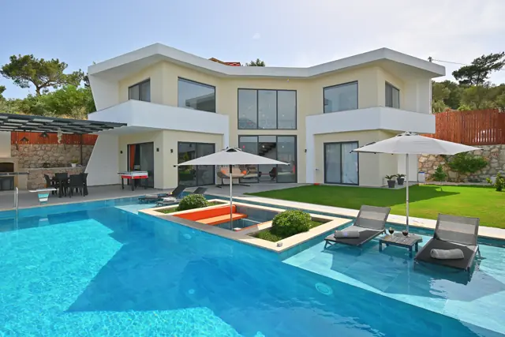

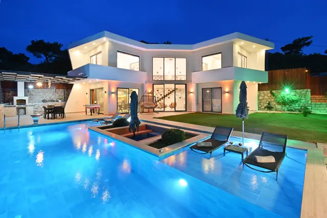

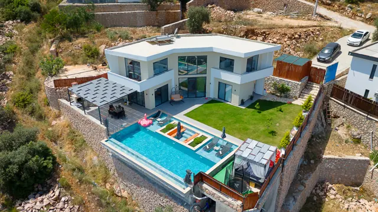

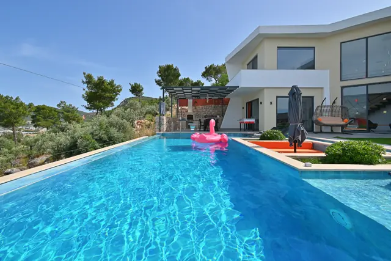

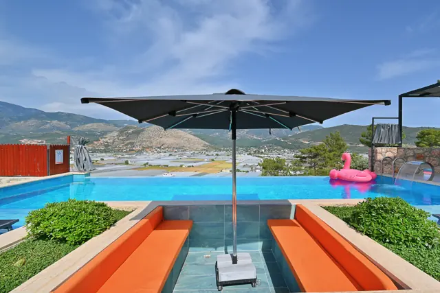

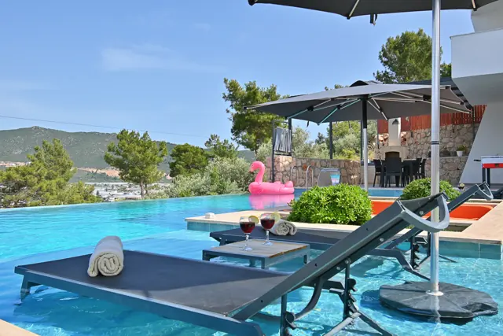

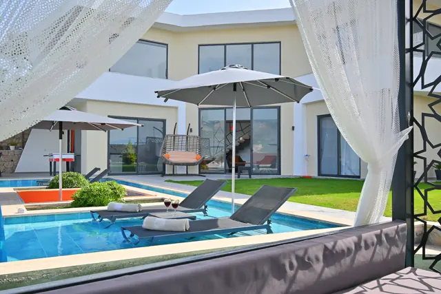

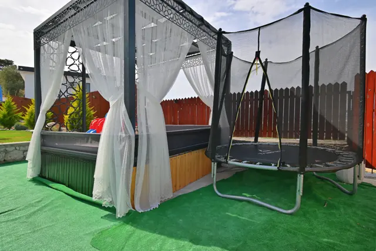

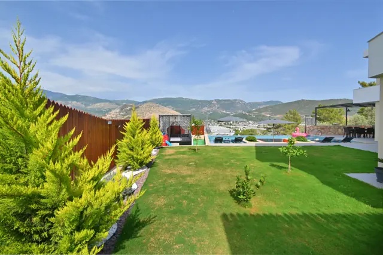

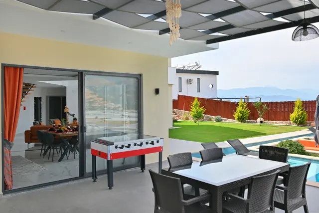

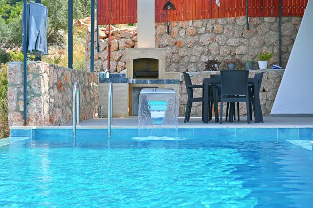

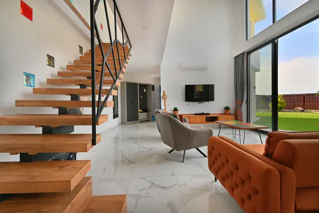

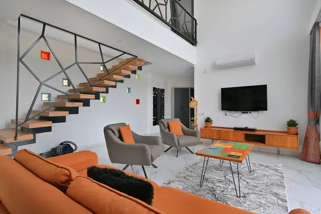

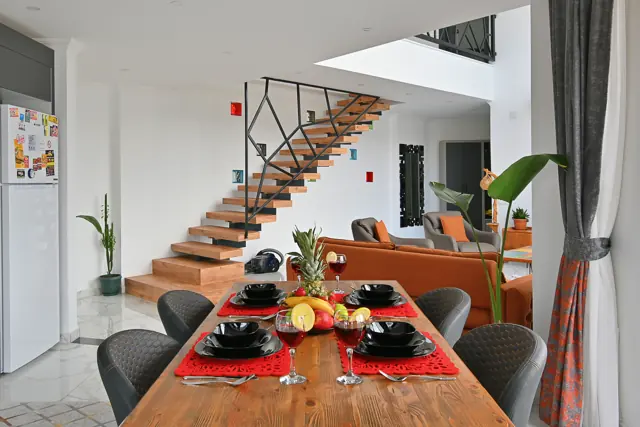

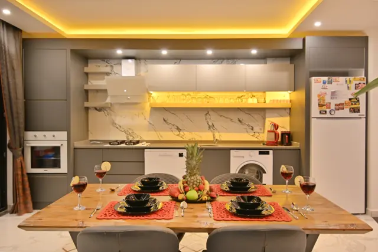

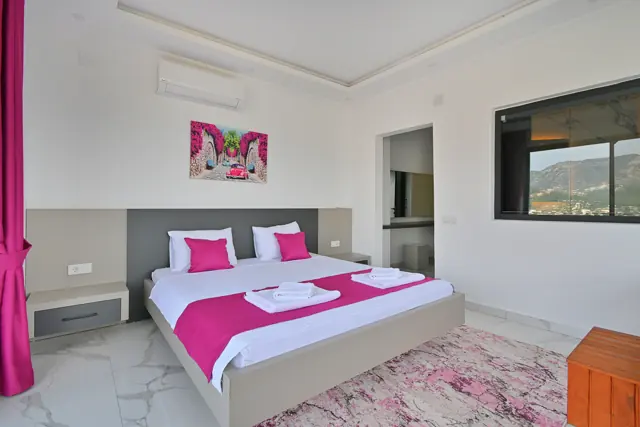

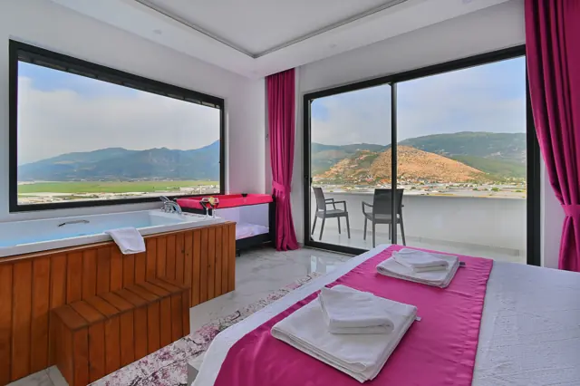

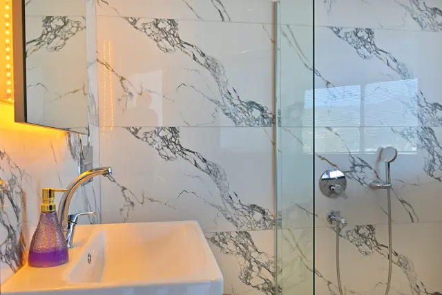

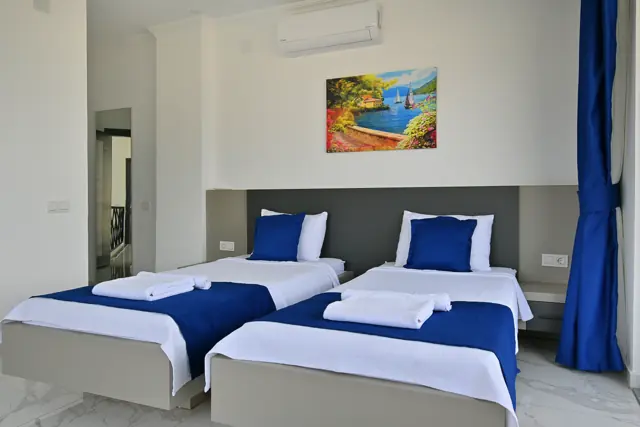

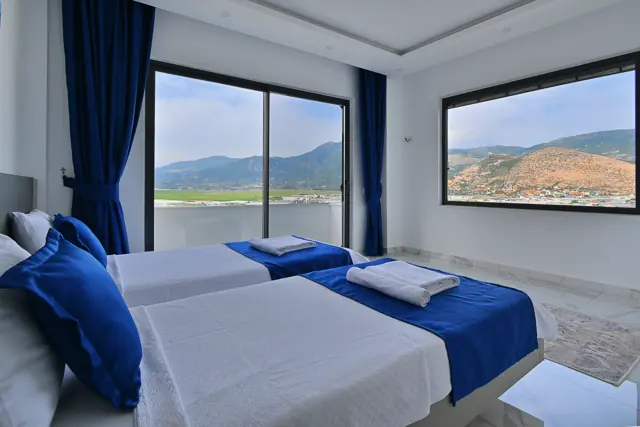

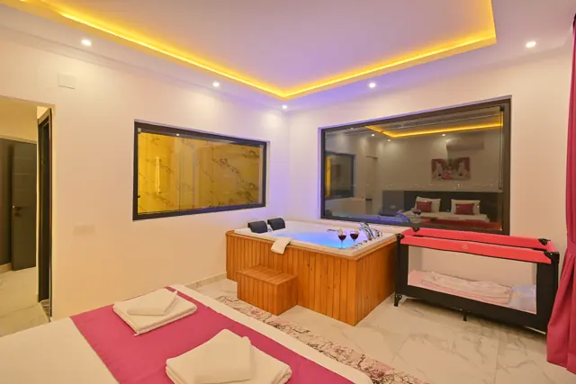

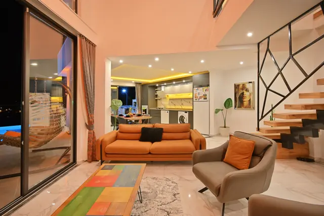

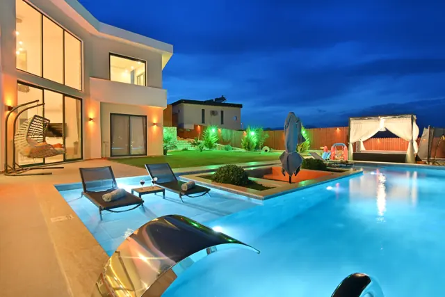

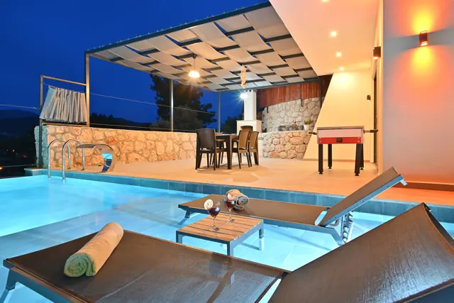

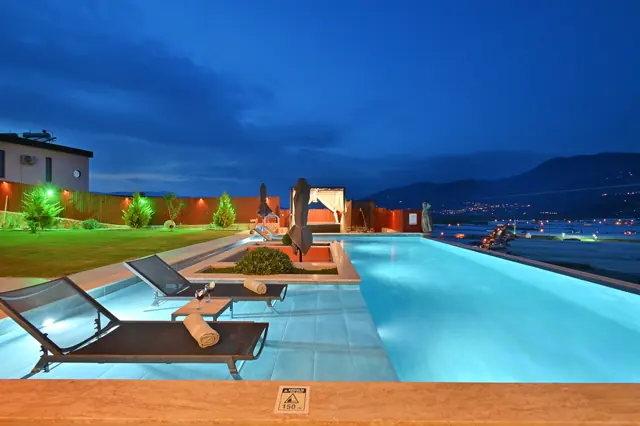
Property details
Amenities
Verified amenities will be published here soon.
Location
Kalkan, Antalya, Türkiye
Exact location and distances will be shared after confirmation.
Plan your stay
Enquire about your dates
Send a date enquiry directly to the villa team. No availability is confirmed until you receive a reply.
Ask for current rates.
FAQ
Frequently asked questions
How can I check availability?
Send your dates using the enquiry form once the contact details are enabled. Availability must be confirmed by the host.
Are the gallery photos of the actual property?
Yes. This gallery shows original photographs of Villa Glass House supplied by the owner.
Where is the villa located?
The property is in the Kalkan area of Antalya, Türkiye. Exact location details will be confirmed by the host.
Can I book instantly?
No. Booking requests are enquiries until the host confirms the dates and terms.